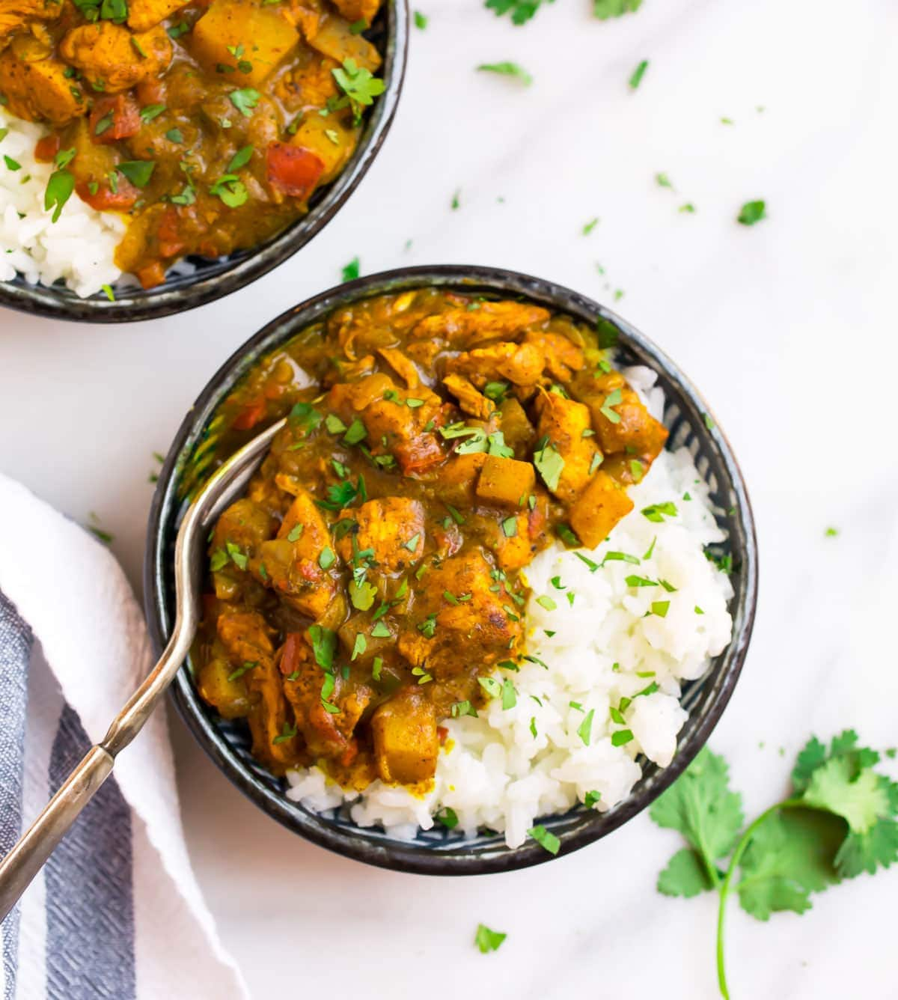

Jamaican Curry Chicken

Description:
Traditional Jamaican chicken curry is a bold, flavorful dish that’s cooked slowly over low heat, allowing time for the spices to develop. It’s believed that the dish (and its corresponding spices) came to Jamaica in the 17th century when workers from East India were brought to the British colony.
Ingredients:
- 1 1/4 pounds boneless, skinless chicken breasts cut into 1-inch pieces (about 2 breasts)
- 1 teaspoon kosher salt
- 2 tablespoons olive oil
- 1 medium yellow onion finely chopped
- 1 red bell pepper very finely chopped*
- 2 jalapeno peppers very finely chopped*
- 3 cloves garlic minced (about 1 tablespoon)
- 1 teaspoon minced fresh ginger
- 3 1/2 tablespoons curry powder
- 1 teaspoon turmeric
- 3/4 teaspoon allspice
- 1/4 teaspoon cayenne pepper plus additional to taste*
- 2 medium Yukon gold potatoes peeled and diced
- 1 15-ounce can light coconut milk
- 1 tablespoon Worcestershire sauce
- 1 1/2 teaspoons white wine vinegar
- 1 teaspoon hot sauce plus additional to taste*
- Chopped fresh cilantro
- Prepared brown rice quinoa, or cauliflower rice, for serving.
Steps:
- Sprinkle the chicken with salt. Set aside.
- In a Dutch oven or similar deep, sturdy pot, heat the oil over medium. Once it is hot, add the onions, and cook, stirring occasionally, until the onions begin to soften and turn translucent, 5 to 8 minutes.
- Stir in the red bell pepper, jalapeños, garlic, and ginger. Cook, stirring often, for 2 minutes.
- Add curry powder, turmeric, allspice, and cayenne. Cooking, stirring constantly, until spices turn deep gold and become ultra fragrant, about 1 minute.
- Add the chicken and sauté for 5 minutes, stirring often. It should look golden on the outside but does not need to be completely cooked through.
- Add the potatoes. Cook, stirring often, for 3 minutes.
- Add the coconut milk, Worcestershire, vinegar, and hot sauce. Stir to combine. Bring to a simmer. Continue to simmer, reducing the heat to low as needed, until the chicken is tender and cooked through, the potatoes are tender, and sauce has slightly reduced, 15 to 20 minutes. Stir every few minutes to keep the sauce from sticking.
- Taste and season with additional salt or hot sauce as desired. Serve hot over rice, with a big sprinkle of cilantro.